| |
|
HENDEKLER
|
Genel Bilgiler
Parametrik Tanım Vektörel Tanım Bordüre Göre Tanım Tipe Göre Bordür Tanımı Sabit Hendek ve Boyuna Hatta Göre Tanımlı Hendek Dolguda Zorunlu Hendek. Zorunlu Nokta Dolgu Topuk Hendeği Tesviye Yüzeyinin Hendekle Kapatılması Hendek Kaplaması Eğimi Ayarla Izgara Dolgu Şevi Boyunca Yükselir Malzeme Genel Bilgiler Hendeği tanımlamak için iki yöntem vardır: parametrik ve vektörel. Ayrıca, hendek tabanının kendi boyuna hattına sahip olması mümkündür, bu da hendeklerin akışını kontrol etmeyi ve drenaj noktalarını zorlamayı sağlar. Hendeğin bağlantı noktası KONTROL/HENDEK menüsünde ayarlanır. 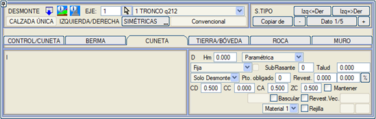
Parametrik Tanım Tanımlama, tabanı düz olan veya olmayan bir hendek oluşturmak için kullanılan beş değer aracılığıyla yapılır. Bu varsayılan moddur. Beş değer şunlardır:
Vektörel Tanım Tanımlama MODU [VEKTÖREL] olduğunda, [VEKTÖR n nkt] düğmesine basarak vektör için veri tanımlamaya girmek mümkündür; burada n, hendeğin vektörel tanımında kullanılan nokta sayısıdır. 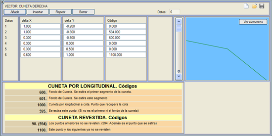
Vektörde, üçüncü sütunda 600 koduyla tanımlayarak hendek tabanını işaretleyen nokta önceden belirlenebilir. Eğer vektörel hendek ayrıca bir boyuna hatta göre tanımlanmışsa, davranış daha çok yönlüdür ve aşağıdaki olasılıklara izin verir:
Bordür tablosundan bir eleman seçmeyi ve hendek geometrisini onunla oluşturmayı sağlar; taban çizgisini kazı, kapak çizgisini ise kaplama olarak alır. Kurulumla birlikte gelen Despejes.isa örneğinde, Cuneta_TTR_15.bor (TTR-15 geçilebilir hendek) bordürü hendek olarak kullanılır. 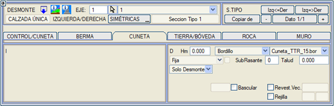
Tipe Göre Bordür Tanımı Dördüncü bir mod olan Bordür+Tip, Bordür modu gibidir ancak bu hendeği genel bir hendek kaplaması olarak ölçmek yerine, bordürde tanımlanan tipi kullanır ve böylece ölçümler bordür tipine göre ayırt edilebilir. Sabit Hendek ve Boyuna Hatta Göre Tanımlı Hendek 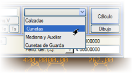KIRMIZI KOTLAR menüsünden, biri SAĞ hendek ve diğeri SOL hendek için olmak üzere iki boyuna hat tanımlama seçeneği vardır. Bu boyuna hatlar, sadece hendeğin boyuna hatta göre tanımlandığı ve ayrıca boyuna hattın hendek tabanı noktasının altında olduğu bölgelerde kullanılır.
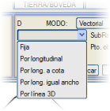Hendek veri penceresinde ayrıca, hendeğin nasıl uygulanacağını, yani sabit mi yoksa kendi boyuna hattını mı takip edeceğini seçmeyi sağlayan bir açılır menü bulunur. İkinci durumda, geometrisinin elde edilmesi için aşağıda ayrıntıları verilen birkaç olasılık daha vardır.
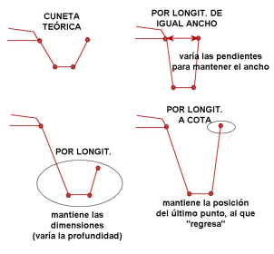Vektörel olarak tanımlanabilir. Bu durumda, hendeğin bağlanacağı tepe noktası, vektörel tanımın üçüncü sütununda 600 koduyla tanımlanan nokta olacaktır. Eğer 600 kodu kullanılmazsa, hendek tabanının ilk nokta tarafından belirlendiği anlaşılacaktır. Her durumda, hendek tabanının boyuna hattın kotuna sahip olması için uzunluğu değişen segment, hendeğin ilk segmenti olmaya devam eder.
Ayrıca, boyuna hat açılır menüsünün yanında iki kutucuk etkinleştirilebilir. Birincisi, hendeğin, hendek tabanı yerine kaplamadan geçecek şekilde uygulanmasını zorlar. Vektörel kaplamalar durumunda, kotun doğru hesaplanması için kaplama kalınlığının belirtilmesi gerekir. İkinci kutucuk, normalde hendeğin boyuna hatta uyum sağlaması için uzayacak olan segmentin, gerekirse kısalmasına da izin verir. Dolguda Zorunlu Hendek. Zorunlu Nokta Hendek geometrisinin tanımında, dolgu durumunda bile hendeğin yapılmasını zorlamak için Dolgu kutucuğu etkinleştirilebilir. Hendek dolgu kesitinde kullanıldığında ve tesviye yüzeyinin kapanacağı hendek noktası kullanıldığında, eğer hendeğin son noktasından daha büyük bir sayı verirsek, o zaman tesviye yüzeyi eğimiyle dolgu şevini kesene kadar uzatılır. Öte yandan, hendek arazi ile kesişim noktasında çizilmeyi bırakır. Bu davranış, zorunlu nokta olarak adlandırılan kutucukta, hendeğin gösteriminin hangi tepe noktasına kadar istendiği belirtilerek değiştirilebilir:
Resimde görüldüğü gibi, bu, hendek tepe noktalarının yeniden kodlanmasına ve şevi, tip kesitte dolgu şevi olarak tanımlanan şeve karşılık gelen küçük bir dolguya neden olur. Zorunlu Nokta: Alçalan araziye sahip sığ yarmalarda, hendeğin son noktaları arazinin üzerinde kalabilir. Eğer zorunlu noktaya=100 değeri verirsek, o zaman hendeğin ilk noktası, dolgu kesitinin üst şeviyle kaydırılır, böylece hendeğin son noktası araziyle çakışır. Dolgu Topuk Hendeği 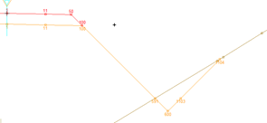Dolgu enkesitlerinde, hendek dolgu topuğundan itibaren eklenir (kod 601, 591 ile değiştirilir). Tesviye Yüzeyinin Hendekle Kapatılması Aşağıda, banket kenarından veya palyeden sarkan hendekler için farklı olasılıklar gösterilmektedir:
Hendek Kaplaması  ISTRAM®BIM, hendeğin iç kaplamasını tanımlamaya olanak tanır. Kaplama kalınlığının değeri Kaplama alanında belirtilir. Yan duvarlar için farklı bir kaplama tanımlamak mümkündür. Kaplama değerleri kullanıldığında, program hacim raporlarında bunların metrajını çıkarır. ISTRAM®BIM, hendeğin iç kaplamasını tanımlamaya olanak tanır. Kaplama kalınlığının değeri Kaplama alanında belirtilir. Yan duvarlar için farklı bir kaplama tanımlamak mümkündür. Kaplama değerleri kullanıldığında, program hacim raporlarında bunların metrajını çıkarır.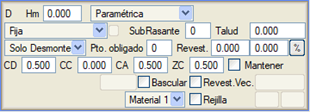 Hendek palye kenarından başladığında, eğer kaplama yatay bir kesimle başlıyorsa, bu kesime palyenin aynı eğimi verilir. Eğer hendeğin dış yüzü araziyi keserse, kesit, kaplamanın araziyi kestiği yerde kesilir. Birçok projede kaplama kalınlığı boyuna eğime bağlı olduğundan, program kaplama kalınlığını bu eğime göre koşullandırma seçeneği sunar. Bu, [%] düğmesi kullanılarak yapılır; bu düğme, iki kesme eğimine bağlı olarak üç farklı kaplama değeri beyan etmenin mümkün olduğu bir diyalog kutusu açar: 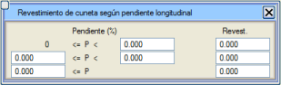
Hendek kaplamasının başladığı vektörün bir noktası sabitlenebilir. Kaplama kalınlığına negatif bir değer verebiliriz. Negatif değerle toplam genişlik de korunur. (Parametrik ve benzeri vektörel hendekler için geçerlidir) Tesviye yüzeyinin değiştirilmiş hendeğe ulaşması için SubRasante=1 olarak ayarlanması tavsiye edilir. Negatif bir kaplama değeri kullanılırsa, yan duvarların kaplaması için kalınlık kutucuğu devre dışı bırakılır. Hendek kaplamasını vektörel olarak tanımlamak mümkündür. Vektör, bir koddan (örn. 50) başlayarak vektör kazı yüzeyini (L68) kesene kadar uygulanır. 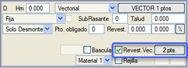
Alternatif bir referans kodu tanımlanabilir, örneğin hendek Dolgu'ya atlıyorsa ve farklı bir kod taşıyorsa. 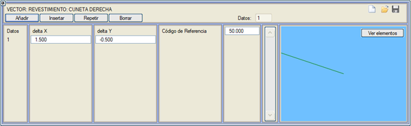
Eğimi Ayarla Eğimi Ayarla (P-P0) seçeneği, bir palye-hendek'in tipik davranışını sabitlemeyi sağlar. Bunun için burada, çatı eğimi olabilecek bir P0 dever değeri tanımlanır. Eğer platform, hendeğe doğru P0 değerinden daha büyük bir P deveri ile akıyorsa, hendek P-P0 değeri kadar eğilir. Eğer dever daha küçükse veya diğer tarafa akıyorsa, hendek hareket etmez. 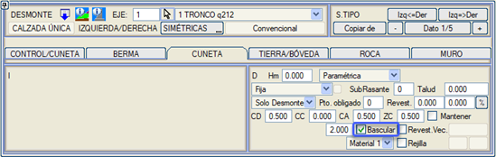
Kontrol/Hendek = Seçme Malzeme / Seçme Malzeme veya Hendek Tabanı / Seçme Malzeme olan kesitler için, Eğimi Ayarla = -100.00 % olarak ayarlanabilir, böylece hendek, seçme malzemenin getirdiği aynı eğimle eğilir. Izgara Izgara seçeneği, hendeğin iki noktası arasına bir ızgara kapağı yerleştirmeyi etkinleştirir. Eğer hendek kaplamalı ise, ızgara kaplamanın omuzları arasına yerleştirilecektir. Izgara bir gövde olarak oluşturulur. Geometrisi PARAMETRELER menüsünden yapılandırılabilir. Dolgu Şevi Boyunca Yükselir Boyuna Hatta Göre ve Dolgu Topuğu olarak tanımlanan hendekler için: bu seçenek etkinleştirilirse ve boyuna hattın kotu minimum hendek tabanının üzerindeyse, hendek, boyuna hatta uymak için minimum derinliği (hendeğin teorik geometrisini tanımlayan) koruyarak dolgu şevi boyunca yükselir. Bu durumda, zorunlu nokta değeri otomatik olarak hendeğin son noktasına taşınarak tam hendek oluşturulur. 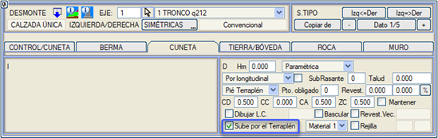
Malzeme Hendeği, dört farklı kaplama malzemesi arasından seçim yaparak kaplamak mümkündür. 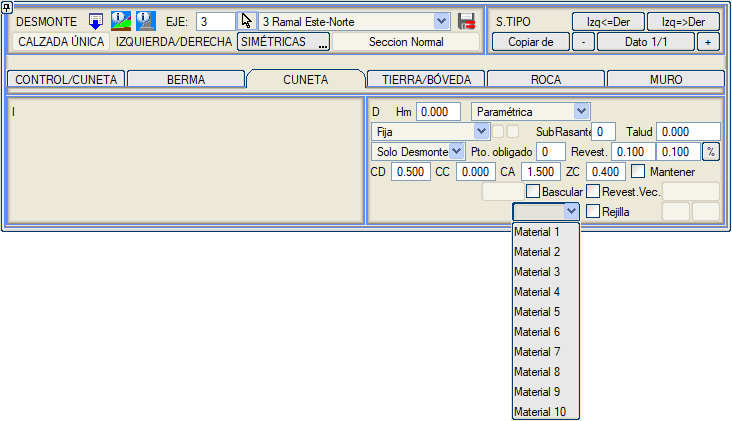
Kaplamalı hendek her zaman genel yüzey 176 ile ve ayrıca her bir malzeme için özel bir tiple (Malzeme 1 için 446, Malzeme 2 için 231, Malzeme 3 için 232 ve Malzeme 4 için 233) temsil edilecektir. |